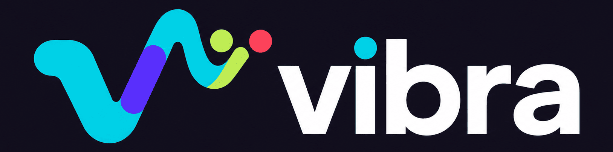
CASE STUDY · PRODUCT DESIGN · UX/UI
Simplificar la compra sin romper lo que ya funcionaba.
Rediseño Mobile First de una plataforma de ticketing orientado a reducir fricciones durante la compra, simplificar el descubrimiento de eventos y adaptar interacciones complejas al contexto móvil. Este case study está basado en un proyecto real, con la identidad de la empresa protegida bajo la marca ficticia Vibra.
Explorar el proyecto arrow_downward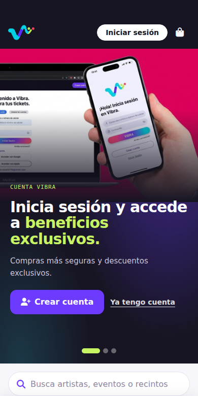
flag02 · Contexto
Una experiencia conocida que necesitaba evolucionar
El proyecto nació a partir de la necesidad de evolucionar la experiencia digital de una plataforma de venta de entradas para eventos. La información disponible durante el proyecto revelaba una situación particular: la percepción general del producto era positiva, pero existían fricciones específicas en momentos críticos del recorrido, especialmente al descubrir eventos, identificarse y completar una compra desde dispositivos móviles.
Por eso, el desafío no consistía en reconstruir completamente la experiencia. Consistía en entender qué conservar, qué simplificar y qué modernizar — un criterio al que volvemos más adelante, en la síntesis del proyecto.
Vibra conecta a dos tipos de usuarios:
- El Comprador, foco de este proyecto.
- El Productor, que gestiona eventos desde un panel B2B y queda documentado como oportunidad futura.
badge03 · Mi rol
UX/UI Designer
Mi responsabilidad abarcó el proceso UX/UI completo, desde el diagnóstico y research hasta la arquitectura, definición de flujos, prototipado, validación y evolución visual de la solución.
Trabajé junto a un equipo de 3 personas, colaborando con producto y desarrollo en la definición de la experiencia.
Por motivos de confidencialidad, la identidad de la empresa, contenidos y determinados elementos visuales han sido modificados. Este case study conserva los problemas, aprendizajes y decisiones UX desarrollados durante el proyecto.
travel_explore05 · Diagnóstico inicial
Antes de diseñar, identificamos dónde podía mejorar la experiencia.
Esta etapa responde a una pregunta puntual: ¿qué problemas detectamos en la experiencia existente? Antes de iniciar formalmente el proyecto realizamos un diagnóstico UX de la plataforma para identificar oportunidades de mejora en los principales momentos de la experiencia.
A partir de este análisis detectamos una serie de oportunidades funcionales y visuales que dieron forma a nuestra propuesta inicial para el cliente.
Mejorar el flujo de compra
Identificamos oportunidades para simplificar el recorrido y hacer más claro el proceso desde la selección de entradas hasta completar la compra.
Reducir la repetición de eventos
Un mismo evento podía aparecer en múltiples cards dependiendo de sus fechas o ubicaciones. Propusimos consolidarlo en una única entrada y presentar sus distintas funciones como alternativas dentro del evento.
1 evento × múltiples fechas / ubicaciones = múltiples cards
1 evento ↓ múltiples fechas y ubicaciones
Mejorar la búsqueda y exploración
Identificamos oportunidades para facilitar la forma en que los usuarios encontraban eventos dentro de la plataforma, mejorando la utilidad del buscador y los mecanismos de filtrado — el buscador dependía demasiado de términos exactos y los filtros existentes estaban obsoletos.
Dar mayor jerarquía al Home
La página de inicio estaba compuesta principalmente por cards de eventos, sin una jerarquía clara de contenidos ni espacios destacados. Propusimos reorganizar el Home incorporando un hero y secciones destacadas que facilitaran el descubrimiento y permitieran dar mayor protagonismo a determinados eventos.
Mejorar la experiencia mobile
Identificamos oportunidades para optimizar la experiencia en pantallas pequeñas, especialmente en interacciones relacionadas con la exploración y el proceso de compra. Esta oportunidad se profundiza más adelante con evidencia concreta de research.
Modernizar la experiencia visual
Propusimos actualizar visualmente la plataforma para construir una experiencia más contemporánea y coherente con el carácter de entretenimiento del producto, manteniendo la familiaridad de una experiencia que los usuarios ya conocían.
Estas oportunidades dieron forma a nuestra propuesta inicial. Una vez iniciado el proyecto, profundizamos en la experiencia para comprender cuáles eran las fricciones más relevantes y cómo debíamos abordarlas.
handshake06 · Business needs
El cliente buscaba una evolución visual y funcional de la plataforma.
Esta etapa responde a una pregunta distinta: ¿qué necesitaba conseguir el producto o el negocio? Además de las oportunidades detectadas durante el diagnóstico, el cliente planteó necesidades concretas relacionadas con la forma de descubrir, presentar y comprar eventos dentro de la plataforma.
Mejorar el flujo de compra
Optimizar el recorrido desde la selección de entradas hasta completar la compra, reduciendo fricciones y haciendo más comprensible cada etapa.
Mejorar el buscador y los filtros
El buscador existente tenía dificultades para devolver resultados cuando la búsqueda no coincidía con términos exactos, mientras que los filtros disponibles habían quedado obsoletos. El cliente necesitaba mejorar ambos mecanismos para facilitar el descubrimiento de eventos.
Mejorar la experiencia mobile
El cliente buscaba mejorar la experiencia desde dispositivos móviles, especialmente en los momentos críticos de exploración, selección y compra.
Dar a cada evento una experiencia propia
El cliente identificaba una desconexión entre la forma en que los eventos eran promocionados en redes sociales y la manera en que posteriormente eran presentados dentro de la ticketera. La nueva experiencia debía permitir que cada evento tuviera mayor identidad visual sin perder el acceso rápido a la información necesaria para comprar.
Incorporar información relevante para la compra
La nueva página del evento también debía concentrar información relevante para la decisión de compra, permitiendo comunicar condiciones particulares como restricciones de acceso, edades de pago infantil u otras indicaciones específicas de cada evento — información que puede variar según el evento, no un conjunto fijo de campos.
Modernizar visualmente la plataforma
Actualizar la apariencia general de la plataforma para construir una experiencia más contemporánea, atractiva y coherente con el tipo de contenido que comercializa.
Algunas necesidades del cliente coincidían con oportunidades detectadas durante el diagnóstico inicial. No es una contradicción — al contrario, confirma la alineación entre la necesidad del negocio y el diagnóstico UX.
compare_arrows07 · Antes → Después
De los problemas identificados a las decisiones de producto
Antes de entrar en el detalle de research, arquitectura y validación, un resumen de qué problemas existían y qué decisiones de diseño los abordaron.
- radio_button_uncheckedEventos repetidos por fecha y localidad en el catálogo.
- radio_button_uncheckedBúsqueda y filtros poco flexibles, dependientes de términos exactos.
- radio_button_uncheckedCuatro modalidades de venta con recorridos potencialmente distintos entre sí.
- radio_button_uncheckedSelección de asientos compleja en mobile, con cientos de opciones a la vez.
- radio_button_uncheckedTransición poco clara entre la información del evento y el inicio de la compra.
- check_circleArquitectura centrada en el evento: fecha y localidad como filtros dentro de una misma ficha.
- check_circleBúsqueda y filtros rediseñados, orientados al descubrimiento.
- check_circleUna arquitectura común que adapta la etapa de selección según la modalidad de compra.
- check_circleProgressive disclosure: Recinto → Sector → Subzona → Asiento.
- check_circleValidamos el wireframe con usuarios y priorizamos señales más claras para iniciar la compra.
"No buscamos eliminar la complejidad del producto, sino hacer que el usuario la enfrentara solo cuando era necesaria."
travel_explore08 · Research
Lo que descubrimos antes de tocar la interfaz
Una vez iniciado el proyecto, profundizamos el análisis combinando información del producto, necesidades comunicadas por el cliente, feedback de usuarios y evaluación UX de los principales recorridos — desde encontrar un evento hasta guardar la entrada después de comprarla.
“Reducir la complejidad en los momentos donde una decisión sencilla estaba exigiendo demasiado esfuerzo.” El reencuadre que guio el proyecto
Etapas preliminares del recorrido de compra, usadas como guía para organizar los hallazgos que siguen.
insights09 · Principales hallazgos
De encontrar un evento a guardar la entrada
Organizamos lo aprendido según el momento del recorrido al que afecta. No todo tiene el mismo origen: algunos son hallazgos de research con usuarios, otros responden a necesidades del negocio, y otros fueron detectados durante el diagnóstico inicial.
search01 · Encontrar
Más fechas no deberían significar más ruido
Un mismo evento o gira podía aparecer repetidamente en la cartelera al tener diferentes fechas o ciudades, generando múltiples tarjetas para una misma experiencia.
La unidad principal de información debía ser el evento, no cada combinación de evento, fecha y ciudad.
Reorganizar el modelo para agrupar múltiples fechas y ubicaciones dentro de un mismo evento.
Evento — Santiago
Evento — Concepción
Evento — Temuco
Evento — Puerto Montt
Cuatro tarjetas casi idénticas para una misma experiencia.
Un evento aparece una sola vez; fecha y ciudad se eligen después, como filtros dentro de esa misma ficha.
Diagrama conceptual de la reestructuración de información — no representa pantallas reales de la plataforma original.
“Un evento. Todas sus posibilidades.”
visibility02 · Entender
Entender el evento sin salir de él
El cliente identificaba una desconexión entre cómo se promocionaba un evento en redes sociales y cómo se presentaba después dentro de la ticketera.
Evolucionar la ficha del evento hacia una experiencia propia, con más identidad visual sin perder el acceso a la información necesaria para comprar. Desarrollamos esta decisión en detalle más adelante.
grid_view03 · Seleccionar
De cientos de asientos a una decisión manejable
En determinados eventos con asiento numerado, seleccionar una localidad podía mostrar cientos de asientos simultáneamente. En mobile, esta densidad aumentaba la carga visual y la dificultad de interacción.
El problema no era cuántos asientos existían, sino cuántos debía procesar el usuario al mismo tiempo.
Dividir localidades grandes en subzonas más pequeñas, cada una con su propio código de color asociado a la localidad.
Platea Baja — ejemplo conceptual
~100 asientos
~100 asientos
~100 asientos
Las subzonas mantienen el mismo color asociado a su localidad, para conservar la relación visual. Principio de diseño aplicado: Progressive Disclosure — revelar la complejidad por capas, en el momento en que corresponde, en lugar de exponerla toda de una vez.
El Benchmark, especialmente PuntoTicket, ayudó a confirmar un patrón de selección espacial progresiva ya identificado — no fue el origen del hallazgo.
“No redujimos las opciones. Redujimos cuántas debía procesar el usuario al mismo tiempo.”
shopping_cart_checkout04 · Comprar
El usuario quería comprar una entrada, no completar un registro
Uno de los puntos de fricción identificados estaba relacionado con el acceso y la entrega de datos personales durante la compra. Información como el RUT podía aumentar la resistencia antes de completar la transacción.
Cada requisito previo al pago debía justificar su existencia.
Reducir la fricción de identificación y priorizar únicamente la información necesaria para completar la transacción.
Reordenar cuándo se pide cada dato — no eliminar la identificación — fue la decisión central derivada de este hallazgo.
La compra rápida es una solución propuesta: se presenta como hipótesis de diseño a validar, no como una funcionalidad implementada.
account_balance_wallet05 · Guardar
La compra no termina en la confirmación
Durante el proyecto identificamos consultas de usuarios que contactaban al servicio porque habían perdido o no lograban encontrar sus entradas.
El acceso al ticket podía generar fricción incluso después de haber completado correctamente la compra.
Facilitar la conservación y recuperación de la entrada después de comprarla — desarrollamos esta oportunidad como propuesta UX más adelante.
summarize10 · Síntesis
Un mismo patrón detrás de cada hallazgo
Sin importar el origen — diagnóstico, negocio, research o benchmark — casi todas las decisiones respondían a la misma lógica: entender qué conservar, qué simplificar y qué modernizar.
verifiedConservar
Patrones que los usuarios ya reconocían.
filter_altSimplificar
Interacciones que añadían esfuerzo innecesario.
auto_awesomeModernizar
Una experiencia principalmente móvil que necesitaba evolucionar.
Dos principios transversales guiaron además cada decisión, más que ser hallazgos de una etapa específica: diseñar primero para el contexto móvil, y evolucionar la experiencia sin obligar a los usuarios a aprender todo de nuevo.
travel_explore11 · Benchmark funcional
Mirar el mercado para entender patrones, no para copiarlos
Analizamos dos plataformas de ticketing y un referente transaccional para entender cómo el mercado resolvía algunos de los momentos más críticos identificados durante el research: eventos con múltiples funciones, distintos modelos de entrada, identificación, selección de asientos y experiencia postcompra.
El Benchmark no descubrió nuestros problemas — el diagnóstico inicial y el research los identificaron primero. El Benchmark ayudó a reconocer patrones ya conocidos en el mercado para resolverlos.
Puntoticket
- Descubrimiento de eventos
- Categorías
- Sectores
- Precios
- Disponibilidad
- Identificación
- E-ticket
Su modelo confirma la importancia de sectores, disponibilidad, precio total e identificación dentro de la experiencia de ticketing.
Explorar una identificación con menor fricción antes del pago.
Passline
- Descubrimiento
- Diferentes tipos de entradas
- Cantidad
- Funciones
- Ticket digital
- Experiencia para productores
- Wallet
- Experiencia postcompra
Passline demuestra cómo un ecosistema de ticketing puede extenderse desde la compra hacia la gestión del evento y la experiencia posterior.
Separar claramente la experiencia del comprador y productor, manteniendo posibilidades de evolución postcompra.
Cinépolis
- Selección de función
- Fecha
- Horario
- Cantidad
- Selección de asiento
- Checkout
Una transacción con múltiples decisiones puede distribuirse en pasos progresivos sin mostrar toda la complejidad simultáneamente.
Aplicar progressive disclosure en procesos de selección complejos.
table_chart12 · Matriz del benchmark
El benchmark confirmó patrones. Nuestro research definió qué mejorar.
| Criterio | Puntoticket | Passline | Cinépolis | Oportunidad Vibra |
|---|---|---|---|---|
| Descubrimiento | Sí | Sí | — | Evento como unidad principal |
| Múltiples fechas / funciones | No evaluado | Sí | Sí | Agrupadas dentro de un mismo evento |
| Entrada general | No evaluado | Sí | — | Modalidad 01 |
| Selección por sector | Sí | No evaluado | No evaluado | Modalidad 02 |
| Asiento numerado | No evaluado | No evaluado | Sí | Modalidad 03 — Progressive Disclosure |
| Identificación | Sí | No evaluado | — | Menor fricción antes del pago |
| Datos personales | No evaluado | No evaluado | — | Solo lo necesario para la transacción |
| Ticket digital | Sí | Sí | — | E-ticket |
| Experiencia postcompra | No evaluado | Sí | — | Oportunidad futura (wallet, recordatorios) |
| Productores | No evaluado | Sí | — | Future scope — fuera del alcance original |
“El objetivo no fue replicar cómo compra el mercado, sino identificar convenciones conocidas y detectar dónde Vibra podía reducir esfuerzo.”
route13 · Del hallazgo a la decisión
Cinco decisiones que definieron el producto
Cada decisión de diseño responde a un origen distinto — diagnóstico, negocio, research o benchmark — y se traduce en una solución concreta dentro del producto.
Un evento, múltiples formas de asistir
Un mismo evento aparecía repetido en la cartelera por cada fecha o ciudad.
Agrupar fecha y ciudad como filtros dentro de una misma ficha de evento.
Ficha de evento unificada. Ver hallazgo completo ↑
De cientos de asientos a una decisión manejable
Cientos de asientos simultáneos eran difíciles de procesar en mobile.
Progressive Disclosure: Recinto → Sector → Subzona → Asiento.
Subzonas de ~100 asientos por color. Ver hallazgo completo ↑
“No redujimos las opciones. Redujimos cuántas debía procesar el usuario al mismo tiempo.”
Del detalle del evento a una experiencia propia
Esta necesidad del negocio —detallada en Business needs— se tradujo en una decisión concreta de producto: la página debía comunicar mejor la identidad del evento sin perder la información necesaria para decidir la compra.
Evolucionar la ficha tradicional hacia una página tipo landing capaz de combinar contenido editorial e información transaccional.
Identidad visual del evento, imagen/hero, descripción, fecha, recinto, precios, condiciones de acceso, información relevante de la venta (por ejemplo, desde qué edad pagan los niños cuando corresponda) y CTA de compra.
“La experiencia editorial nunca debe esconder la información necesaria para comprar.”
Un checkout capaz de adaptarse
Los eventos podían usar distintos modelos de venta: general, por sector, asiento numerado o nominativa.
Una arquitectura común donde la etapa de selección se adapta según la modalidad de compra.
Cuatro modalidades de compra. Ver arquitectura completa ↓
Hacer que la entrada sea más fácil de conservar
Usuarios contactaban al servicio porque habían perdido o no encontraban sus entradas.
El acceso al ticket podía generar fricción incluso después de completar bien la compra.
Incorporar la entrada a una billetera digital compatible. La propuesta busca potencialmente reducir consultas relacionadas con entradas perdidas o difíciles de localizar.
account_tree14 · Arquitectura de información
Reorganizar antes de diseñar
Los eventos podían utilizar diferentes modelos de venta: entrada general, selección por sector, asiento numerado o entradas nominativas. Diseñar un flujo independiente para cada modalidad habría aumentado la complejidad y dificultado la escalabilidad del producto.
Diseñamos una estructura común capaz de adaptar la etapa de selección según la configuración de cada evento. Identificación, resumen, pago y confirmación mantienen una estructura consistente, incorporando datos adicionales cuando la modalidad lo requiere.
Variable — cambia según el evento
Común — igual en las cuatro modalidades
Mapa completo de arquitectura de información
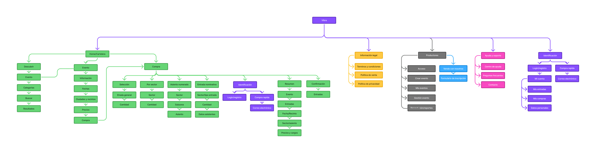
El panel de Productores (en gris) representa una oportunidad de evolución futura del producto — ver sección 22, Evolución del producto — pero queda fuera del alcance de este case study en su etapa actual. — Figjam
checklist_rtl15 · Cuatro modalidades de compra
Una misma estructura, cuatro formas de comprar
Cada modalidad adapta la etapa de selección y, cuando corresponde, incorpora los datos específicos requeridos por el tipo de entrada. Identificación, resumen, pago y confirmación mantienen una estructura común.
01 — Entrada general
02 — Por sector
03 — Asiento numerado
04 — Entrada nominativa
La nominación de asistentes también se diseña mediante Progressive Disclosure: en vez de mostrar el formulario completo de los cuatro asistentes a la vez, se revela uno por uno.
Datos de asistentes
- check_circleAsistente 1
- radio_button_uncheckedAsistente 2 — Agregar datos
- radio_button_uncheckedAsistente 3 — Agregar datos
- radio_button_uncheckedAsistente 4 — Agregar datos
alt_route16 · User Flow
Reducir el camino hacia la entrada
El flujo debía permitir que diferentes modelos de venta convergieran en una experiencia consistente. La complejidad cambia durante la selección, pero identificación, resumen, pago y confirmación mantienen una estructura común.
La etapa de selección se adapta según la modalidad: cantidad, sector, asiento o datos nominativos.
Un flujo común para diferentes formas de comprar
Los eventos podían operar con distintos modelos de venta. En lugar de diseñar recorridos independientes para cada modalidad, concentramos la variabilidad en la etapa de selección y mantuvimos una estructura común para completar la compra.
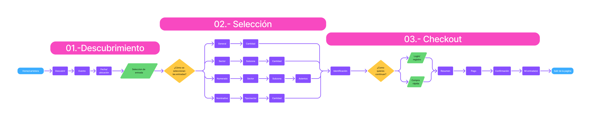
La complejidad cambia durante la selección. La experiencia de compra permanece consistente. — Figjam
design_services17 · Wireframes
Convertir decisiones en estructura
Los wireframes funcionales traducen las decisiones anteriores en pantallas concretas, agrupadas según el objetivo que resuelven dentro del recorrido de compra.
search01 · Descubrir sin ruido
El buscador dependía de términos exactos, los filtros estaban obsoletos y el Home no tenía jerarquía de contenidos.
Mejorar buscador y filtros, e incorporar un hero con eventos destacados.
Buscador · Filtros · Cards agrupadas por evento · Hero · Eventos destacados
Ver en el wireframearrow_forwardvisibility02 · Entender sin salir del evento
Existía una desconexión entre cómo se promocionaba un evento y cómo se presentaba dentro de la ticketera.
Evolucionar la ficha del evento hacia una landing con identidad propia e información relevante para comprar.
Landing · Información relevante · Fechas · Recinto · Precios · Mapa · Cómo llegar · CTA de compra
Ver en el wireframearrow_forwardgrid_view03 · Seleccionar sin sobrecarga
Cientos de asientos numerados simultáneos eran difíciles de procesar en mobile.
Progressive Disclosure: sector → subzona → asiento, en pasos manejables.
Mapa · Sector · Subzonas · Asientos
Ver en el wireframearrow_forwardshopping_cart_checkout04 · Comprar con menos fricción
La identificación interrumpía el impulso de compra antes de llegar al pago.
Reducir campos y pasos entre la selección y la confirmación; compra rápida como hipótesis a validar.
Carrito · Identificación · Compra rápida · Entrada nominativa · Resumen · Pago · Confirmación
Ver en el wireframearrow_forwardCada grupo se traza directamente a una decisión de diseño. El recorrido completo, con todas las pantallas navegables, está disponible en el wireframe funcional interactivo — ver siguiente sección.
play_circle18 · Prototipo / Wireframe funcional
Explora la experiencia.
Recorre el wireframe navegable, construido a partir de las decisiones definidas en las secciones anteriores. Presiona "Explorar wireframe" para recorrer las pantallas completas — podrás volver a este case study en cualquier momento.
insights19 · Validación
Validar antes de llevar la solución a alta fidelidad
Probamos el wireframe funcional con 4 participantes y 5 tareas críticas para identificar fricciones en los principales momentos de la compra.
Además de las respuestas del cuestionario posterior, se consideró la observación directa del comportamiento de cada participante durante las tareas. Los hallazgos que siguen distinguen entre lo declarado y lo observado.
El test tuvo 4 participantes: los resultados se presentan como cantidades de este test (4/4, 3/4, 2/4…), no como porcentajes ni como representación estadística del total de usuarios.
travel_exploreHallazgo principal
“El problema no era seleccionar una entrada. Era saber cuándo empezar.”
visibilityLos 4 participantes intentaron iniciar la compra interactuando con el mapa o con los precios desde la página de información del evento, antes de encontrar el verdadero punto de entrada al flujo de selección.
Los elementos informativos de la página parecían formar parte del flujo de compra, mientras que el verdadero punto de entrada estaba más abajo en la página.
La información estaba disponible, pero la jerarquía de interacción no hacía suficientemente evidente qué podía decidir el usuario ni qué debía hacer después.
Hacer explícita la transición entre la información del evento y la selección de entradas.
Cambio para la siguiente iteración
- arrow_forwardDar mayor claridad al punto de entrada de compra.
- arrow_forwardIncorporar una llamada a la acción clara, como “Seleccionar entradas” o “Ver entradas”.
- arrow_forwardDiferenciar visualmente los elementos informativos de los elementos accionables.
- arrow_forwardSi el mapa de la página de información es únicamente informativo, no debe parecer un selector interactivo.
- arrow_forwardMantener la selección de asientos como una etapa posterior del flujo.
El problema estaba en la transición entre la información del evento y la selección de entradas — no en el modelo Sector → Subzona → Asiento, que este test no puso en cuestión.
eventFecha y localidad
“Ver una fecha no significa entender que puedo cambiarla.”
visibilityLa mayoría de los participantes no identificó espontáneamente que la fecha o localidad mostrada podía modificarse. En el cuestionario, 3/4 indicaron que podían cambiarla y 1/4 lo indicó parcialmente — la observación directa mostró una dificultad de descubrimiento que las respuestas declaradas no reflejaron por completo.
Las fechas y localidades disponibles estaban visibles, pero no tenían suficiente señal de interacción.
Mostrar una opción no garantiza que el usuario la perciba como configurable.
Convertir fecha y localidad en elementos claramente accionables.
Ejemplo conceptual — siguiente iteración
mailCompra sin cuenta
“La compra sin cuenta funciona, pero la elección puede ser más clara.”
La compra rápida fue incorporada al prototipo como hipótesis de diseño y evaluada durante el test — no era una funcionalidad implementada en el producto real.
task_altLos 4 participantes completaron la compra sin crear una cuenta usando “Compra rápida”, con una facilidad reportada de 7/7 en los 4 casos. 2/4 tuvieron dudas en algún momento sobre si era obligatorio iniciar sesión o crear una cuenta, y 1 participante comprendió solo parcialmente por qué se solicitaba el correo.
El test mostró que la tarea podía completarse correctamente: el problema no está en el flujo de compra rápida, sino en la claridad de la elección entre iniciar sesión y continuar sin cuenta.
Mantener la compra sin cuenta, pero hacer más evidente la diferencia entre iniciar sesión y continuar con correo.
“¿Ya tienes una cuenta?” — Iniciar sesión
“¿Quieres comprar sin crear una cuenta?” — Continuar con correo “Te enviaremos tus entradas a este correo.”
check_circleLo que funcionó
El test no solo encontró problemas — también validó decisiones que no necesitaban cambios
searchEncontrar el evento
4/4 participantes encontraron el evento — 3/4 usando filtros o categorías y 1/4 el buscador. Facilidad promedio declarada: 6,25/7 (Escala: 1 = muy difícil · 7 = muy fácil). La exploración inicial permitió encontrar el evento sin bloqueos relevantes.
badgeEntradas nominativas
4/4 completaron correctamente la tarea y 4/4 comprendieron cuántos asistentes debían completar. Facilidad promedio: 6,5/7. La estructura progresiva para completar los datos de los asistentes resultó comprensible.
task_altFinalización de compra
4/4 entendieron que la compra había finalizado y 4/4 comprendieron dónde accederían a sus entradas. Facilidad para entender el siguiente paso: 7/7. El cierre del proceso y el acceso posterior a la entrada fueron claros.
Este test evaluó la capacidad de encontrar el evento dentro del flujo planteado — no valida por sí solo el buscador ni invalida el diagnóstico anterior sobre búsqueda.
“El test mostró que el flujo no necesitaba más pasos. Necesitaba señales más claras.”
Las pruebas permitieron mantener las decisiones que funcionaban y concentrar la siguiente iteración en los puntos donde la interfaz generaba incertidumbre. La principal oportunidad no estaba en completar la compra, sino en hacer más evidente la transición entre información, decisión y acción.
routeDe los hallazgos a la siguiente iteración
Hacer explícito el inicio de la compra
Reforzar la transición entre la información del evento y la selección de entradas mediante una llamada a la acción claramente identificable.
Hacer configurables las fechas y localidades
Convertir fecha y localidad en elementos claramente accionables, para evitar que el usuario interprete la información como estática.
Aclarar las alternativas de identificación
Mantener la compra sin cuenta, pero comunicar con mayor claridad la diferencia entre iniciar sesión y continuar mediante correo.
El modelo de selección Sector → Subzona → Asiento se mantuvo: el test no evidenció un problema en esa interacción, la principal fricción apareció antes de llegar a ella.
widgets20 · Vibra UI — Foundations & Components
Diseñar una experiencia consistente también era parte del producto
Vibra UI está construido de forma curada, componente por componente, mostrando únicamente lo que demuestra pensamiento sistémico — no un inventario completo de tokens.
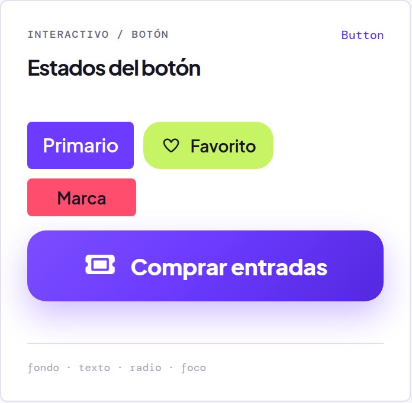
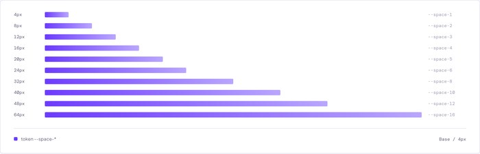
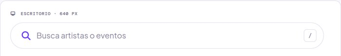
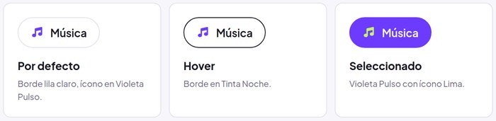
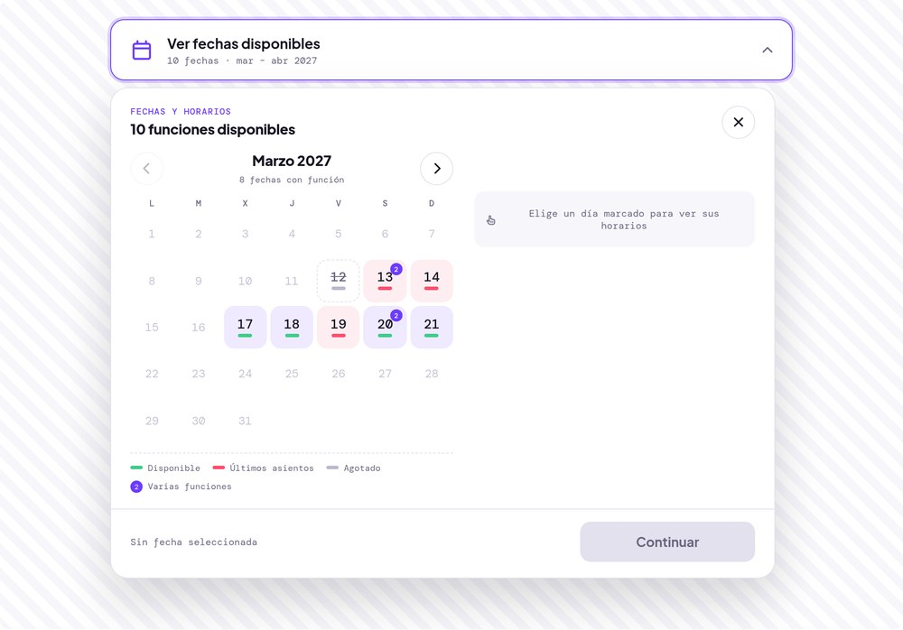
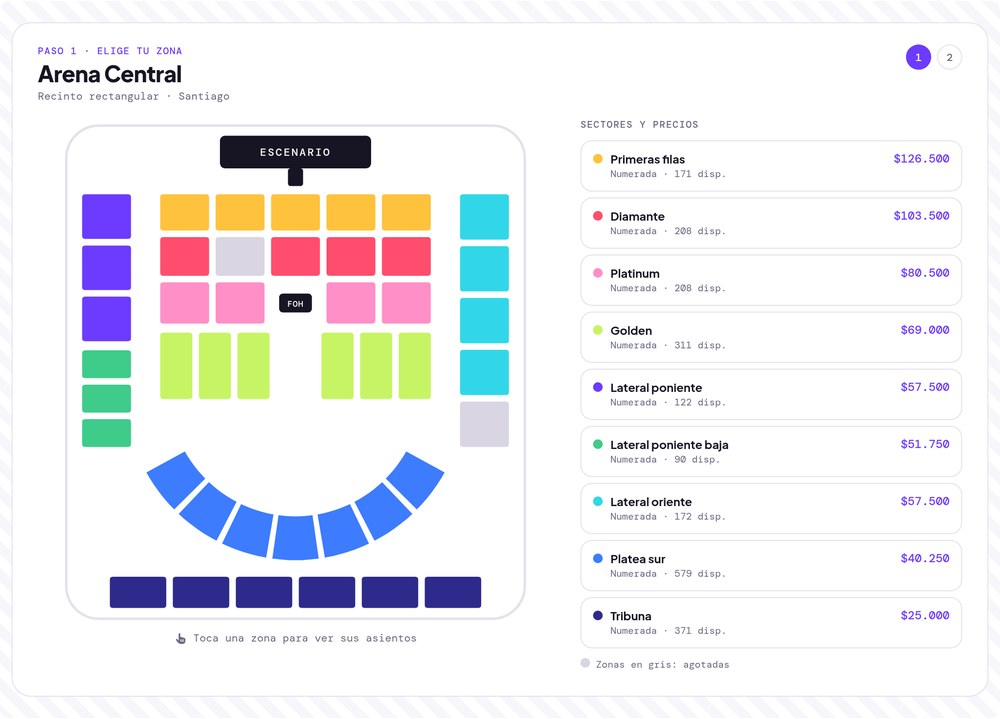
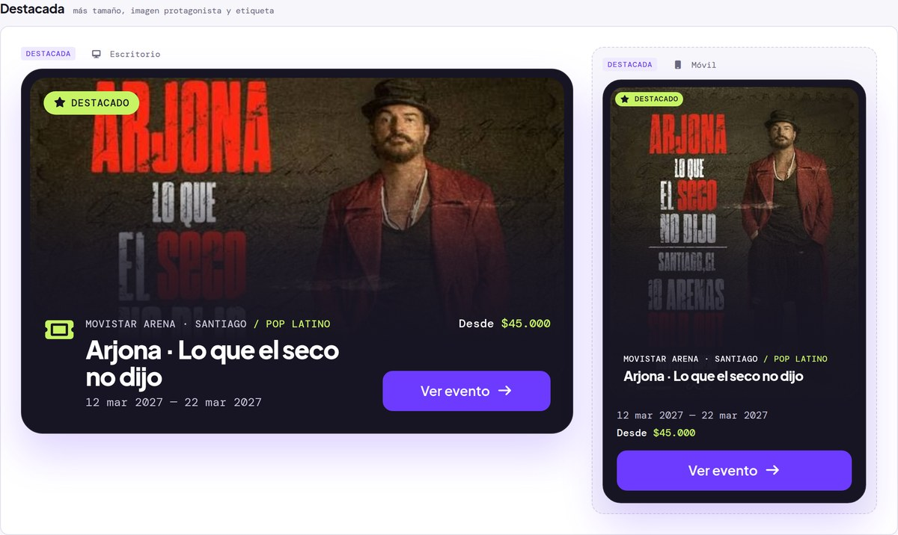
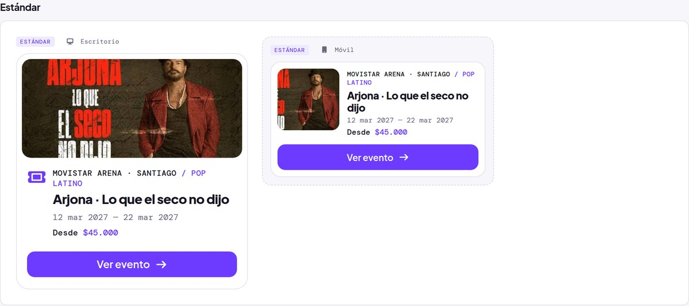
task_alt21 · Resultado
Resultado
Definimos una arquitectura de compra común para cuatro modalidades de ticketing, validamos el recorrido mobile antes de avanzar a alta fidelidad e identificamos tres puntos prioritarios de iteración: inicio de compra, selección de fecha/localidad e identificación.
rocket_launch22 · Evolución del producto
Future Opportunities
La experiencia no tiene por qué terminar después del pago
Estas líneas quedan fuera del alcance original de este case study. Se documentan como exploración posterior de Product Design para ampliar el razonamiento — no como funcionalidades entregadas al cliente ni trabajo ya realizado.
No solo mostrar dónde es, sino ayudar a llegar.
La landing propuesta incorpora información sobre el recinto y su ubicación. A partir de esta solución identificamos una oportunidad adicional: convertir esa información en una acción útil mediante un botón "Cómo llegar".
La propuesta de Wallet — facilitar la conservación de la entrada — se desarrolla en detalle en Del hallazgo a la decisión ↑, junto a la evidencia real que la origina.
flag_circle23 · Cierre
Reducir complejidad sin reducir posibilidades.
Vibra demuestra que mejorar una experiencia no siempre significa agregar nuevas funcionalidades o reconstruir un producto desde cero. El desafío fue identificar dónde la experiencia exigía más esfuerzo del necesario y reorganizar esos momentos para que encontrar, elegir y comprar una entrada resultara más simple.
El resultado documenta la evolución desde el diagnóstico inicial hasta un prototipo final, mostrando cómo los hallazgos de investigación y validación guiaron las principales decisiones de producto.
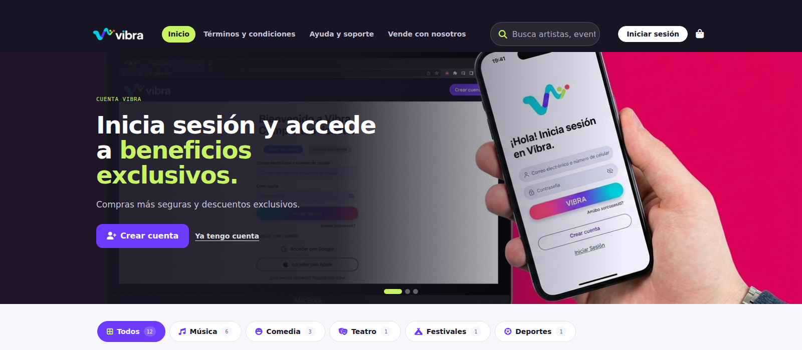
auto_awesomePrototipo final
De las decisiones validadas al prototipo final
El sistema visual definitivo de Vibra incorpora las decisiones derivadas de la validación del wireframe y lleva la solución a una experiencia de alta fidelidad.
Ver prototipo final arrow_forwardarrow_forwardSiguiente proyecto
Tapp — Caja Los Andes
Un producto financiero real, en etapa de research: dónde intervenir para reducir esfuerzo y aumentar el control.
Ver caso de estudio arrow_forward